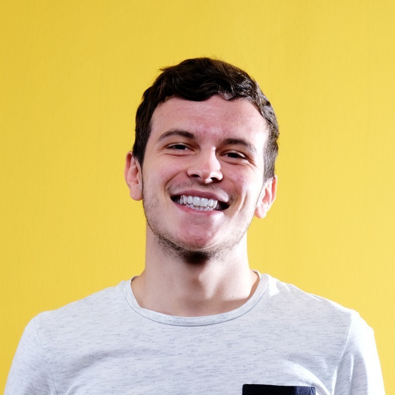

Bonjour, je suis
Brice
Doublet
Ingénieur DevOps
Spécialiste de l'automatisation, des pipelines CI/CD et de la robustesse des infrastructures. Passionné par l'innovation technique.

Scroll
À propos de moi
Un professionnel dévoué, prêt à relever de nouveaux défis et à apporter de la valeur à chaque projet.
Curieux et rigoureux, je m'appuie sur mon expérience pour concevoir des solutions élégantes et efficaces. Mon approche combine une vision stratégique avec une exécution technique précise, en plaçant toujours l'utilisateur au centre de mes réflexions.
J'aime travailler dans des environnements dynamiques où l'apprentissage continu est encouragé et où les idées innovantes peuvent prendre vie.
d'expérience
automatisés
CI/CD
Mon Parcours
Intervenant Technique
Sept. 2025 - PrésentCESI · Indépendant (La Rochelle)
Intervenant technique en infrastructure, système et réseaux pour des élèves de Master (MALSI) et Licence (Bachelors ASR).
Ingénieur Système et Infrastructure
Févr. 2025 - PrésentGroupe Covéa (Niort)
Mise en œuvre et gestion d'infrastructures cloud et locales. Démarche DevSecOps, certification CIS CAT (OSE) et mise en place de tableaux de bord Grafana.
Stagiaire en Laboratoire Universitaire
Févr. 2024 - Août 2024Massey University (Auckland, NZ)
Création et programmation de serveur physique / architecture IoT. Création de dashboards basés sur des modules Arduino. Formation au Machine Learning. Rédaction d'un article de recherche en anglais sur le forecasting IoT.
Stagiaire en Développement
Sept. 2022 - Déc. 2022Kapsül Teknoloji Platformu (Turquie)
Membre de la section "Ville Intelligente". Développement d'un jeu vidéo mobile en C# sous Unity permettant de visiter virtuellement la ville.
Alternant Informatique
Sept. 2021 - Sept. 2022ADEI 17 (Aytré)
Gestion quotidienne du service informatique : support technique, changement de postes, configuration et mise en place de switch niveau 2 pour la téléphonie IP. Déploiement d'un projet de supervision Centreon sous environnement Linux.
Stagiaire en Informatique
Avr. 2021 - Juil. 2021CGO Expertise Comptable (Fontcouverte)
Mise en place de machines virtuelles Linux en production. Recherche de solutions et implémentation d'un serveur de logs visant à centraliser toutes les remontées de l'entreprise (Stack Graylog, Elastic, SLK).
Mes Compétences
Un aperçu de mon expertise et des outils que j'utilise au quotidien.
Touche à tout
Polyvalent par nature, j'aime explorer et maîtriser de nouvelles technologies à chaque niveau de l'infrastructure.
Architecture
Conception de systèmes scalables, maintenables et pensés pour évoluer avec les besoins de l'entreprise.
Analyse & Stratégie
Capacité à traduire des besoins complexes en plans d'action mesurables et efficaces.
Technologies & Outils de prédilection
Prêt à collaborer ?
Je suis toujours ouvert aux nouvelles opportunités professionnelles, aux défis techniques et aux échanges enrichissants.
Me retrouver sur LinkedInFormation Brice Info
Micro-Entreprise Formation
SIREN : 101612950
SIRET : 10161295000010
Etablissement : 00010